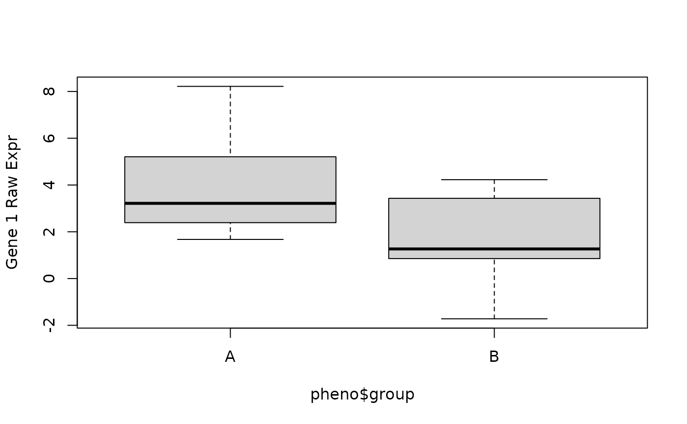
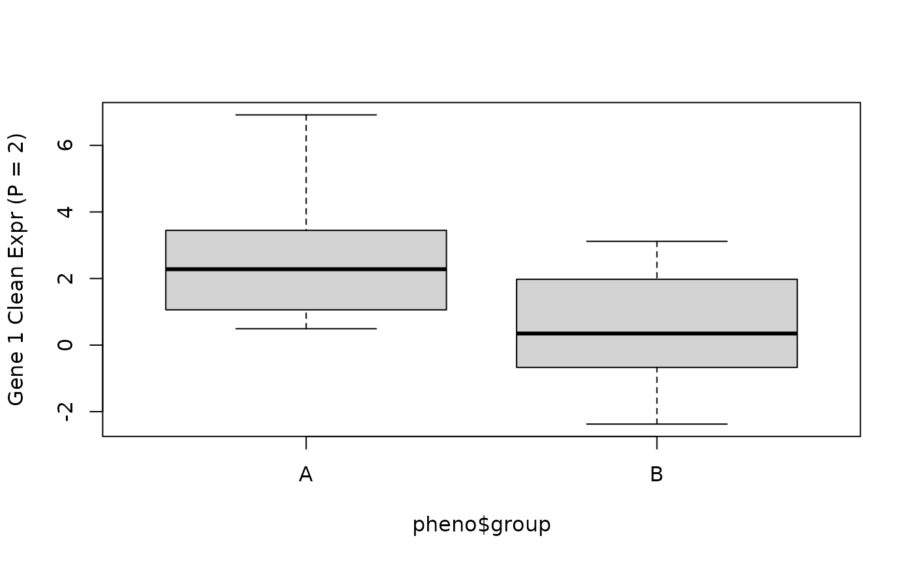
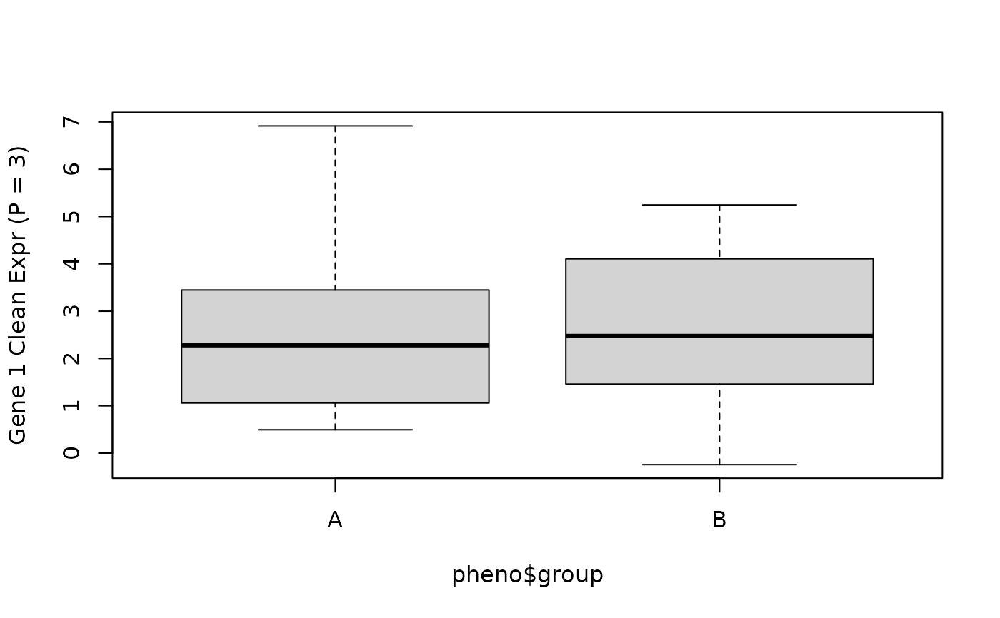

Regress out covariates such as surrogate variables or principal components.
cleaningY(y, mod, P)A matrix such as the outcome matrix from sva or a gene expression matrix.
A full rank model matrix.
The number of SVs or PCs to protect based on the column order.
For example, P=2 would keep the intercept term and a case vs diagnosis
term in a model that is ~ Dx + more covariates.
An object of the same type as y with the SVs/PCs regressed out.
## Define a model generating function for 30 'samples'
set.seed(20190827)
model_fun <- function(x) {
## Baseline + a group effect (2 groups) + a second covariate effect
rnorm(30) +
c(rnorm(15, mean = 3), rnorm(15, mean = 1)) +
c(
rnorm(5, sd = 0.5), rnorm(5, sd = 0.2, mean = 0.5),
rnorm(5, sd = 0.2, mean = 0.9)
)
}
## Generate the data for 20 'genes'
y <- t(sapply(1:20, model_fun))
## Define the phenotype data for these 30 'samples'
pheno <- data.frame(
group = rep(c("A", "B"), each = 15),
batch = rep(1:3, each = 5)
)
## Define a full model
mod <- with(pheno, model.matrix(~ group + batch))
## Check the raw data for gene 1
boxplot(y[1, ] ~ pheno$group, ylab = "Gene 1 Raw Expr")

## Now regress out the batch covariate from the gene expression matrix
y_clean_p2 <- cleaningY(y, mod, P = 2)
## Check the cleaned data for gene 1 (with P = 2)
boxplot(y_clean_p2[1, ] ~ pheno$group, ylab = "Gene 1 Clean Expr (P = 2)")

## Or regress out the group and batch effects
y_clean_p3 <- cleaningY(y, mod, P = 1)
## Check the cleaned data for gene 1 (with P = 3)
boxplot(y_clean_p3[1, ] ~ pheno$group, ylab = "Gene 1 Clean Expr (P = 3)")

## The function also supports NAs observations as detailed below
## Make one observation 0, clean the data
y[1, 1] <- 0
y_clean_p2_0 <- cleaningY(y, mod, P = 2)
## then NA and clean again
y[1, 1] <- NA
y_clean_p2_NA <- cleaningY(y, mod, P = 2)
## Compare the results
corner(y_clean_p2_0)
#> 1 2 3 4 5 6
#> [1,] -0.91412161 4.467535 0.8237796 0.7589492 2.30182237 6.3893738
#> [2,] 4.69694020 4.872453 2.7572398 2.6498754 0.81870259 5.6974067
#> [3,] 5.96280181 2.850590 3.0170601 0.4007953 3.90552240 3.1884766
#> [4,] 2.77728433 1.847305 -0.1302775 1.2934618 0.09785331 -0.6839241
#> [5,] -0.01552682 1.422351 0.7492889 3.5181029 3.70823366 0.9740959
#> [6,] 0.92320637 1.789145 1.9848853 3.0993772 2.48755033 1.2495944
corner(y_clean_p2_NA)
#> 1 2 3 4 5 6
#> [1,] NA 4.467535 0.8237796 0.7589492 2.30182237 6.3893738
#> [2,] 4.69694020 4.872453 2.7572398 2.6498754 0.81870259 5.6974067
#> [3,] 5.96280181 2.850590 3.0170601 0.4007953 3.90552240 3.1884766
#> [4,] 2.77728433 1.847305 -0.1302775 1.2934618 0.09785331 -0.6839241
#> [5,] -0.01552682 1.422351 0.7492889 3.5181029 3.70823366 0.9740959
#> [6,] 0.92320637 1.789145 1.9848853 3.0993772 2.48755033 1.2495944
## They are identical except for that NA in [1, 1]
table(y_clean_p2_0 - y_clean_p2_NA, useNA = "ifany")
#>
#> 0 <NA>
#> 599 1
## Compared to the original y, there are differences since we lost
## one observation which affects all of the first row of the cleaned Y
y_clean_p2[1, ] - y_clean_p2_NA[1, ]
#> 1 2 3 4 5 6 7 8
#> NA 0.2632404 0.2632404 0.2632404 0.2632404 0.5264807 0.5264807 0.5264807
#> 9 10 11 12 13 14 15 16
#> 0.5264807 0.5264807 0.7897211 0.7897211 0.7897211 0.7897211 0.7897211 0.2632404
#> 17 18 19 20 21 22 23 24
#> 0.2632404 0.2632404 0.2632404 0.2632404 0.5264807 0.5264807 0.5264807 0.5264807
#> 25 26 27 28 29 30
#> 0.5264807 0.7897211 0.7897211 0.7897211 0.7897211 0.7897211
all(y_clean_p2[-1, ] - y_clean_p2_NA[-1, ] == 0)
#> [1] TRUE